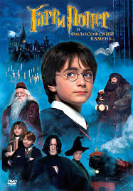
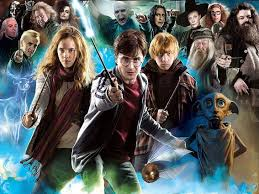
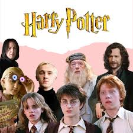
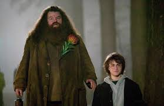
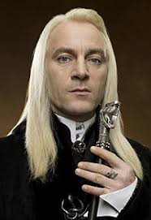
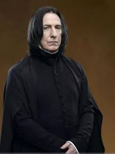
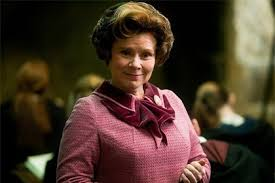
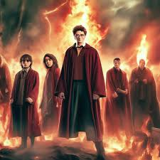
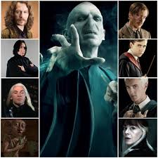

Литературный персонаж, главный герой серии романов английской писательницы Джоан Роулинг. На одиннадцатый день рождения Гарри узнаёт, что является волшебником, и ему уготовано место в школе волшебства «Хогвартс», в которой он будет практиковать магию под руководством директора Альбуса Дамблдора и других школьных профессоров.
Смотреть фильмПерсонаж серии романов о Гарри Поттере. Лучший друг Гарри Поттера и Гермионы Грейнджер, один из главных героев романа. Член семейства Уизли. Учился в школе Хогвартс на факультете Гриффиндор. Впервые упоминается в книге «Гарри Поттер и философский камень».
Смотреть фильмОдна из главных героинь цикла романов о Гарри Поттере наряду с её однокурсниками Гарри Поттером и Роном Уизли. Ученица школы Хогвартс, талантливая молодая волшебница, вундеркинд.
Смотреть фильм